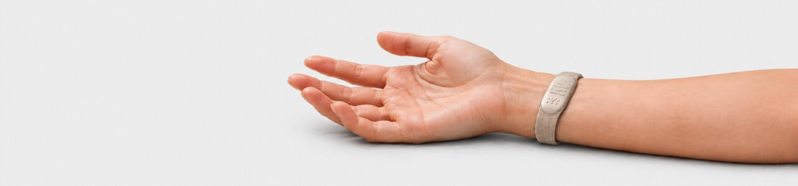
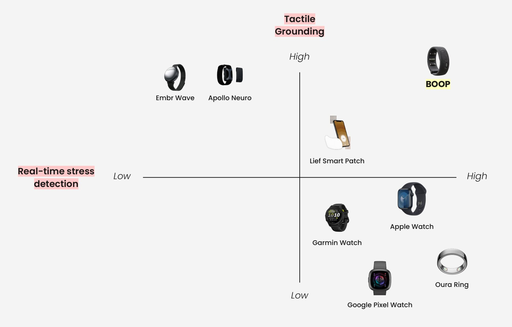
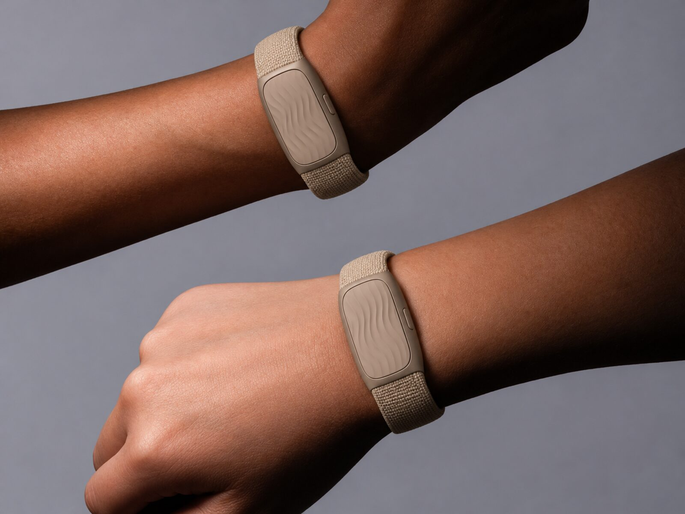

Boop
Helping people respond to stress, right when it happens
Overview
Designed a way to move from noticing stress to responding
Knowing you’re stressed doesn’t necessarily help you through the moment.
Boop, a wearable concept that combines physiological sensing with user-controlled check-ins and screen-free tactile grounding. We delivered a final pitch connecting the product experience, competitive opportunity, and proposed business plan.
01
Detect
Use heart-rate variability, electrodermal activity, and skin temperature to recognize possible physiological arousal
02
Engage
Offer a quiet check-in, manual activation, and a clear stop control
03
Ground
Guide interaction through haptics, texture, movement, or temperature
The challenge
Stress happens in the moment; support needs to meet it there
We focused on people ages 13–29 navigating stress or anxiety at school, work, and in social situations. The deck’s market model assumes 32% of this U.S. age group experiences anxiety, an estimated 24 million people.
How might we help someone in that moment without asking them to open an app, interpret a score, or remember a grounding exercise?
Speak with users
Three needs shaped the experience: control, discretion, and touch
Let people decide
They should be able to start, stop, or decline support.
Keep it discreet.
Support should fit into everyday settings without drawing attention.
Give them a physical focus
Offer something to touch or interact with.
Competitive landscape
Products either track stress or soothe it; none connect the two
Existing products already offered useful parts of the experience. We needed to be precise about where Boop could add value.

01 · Monitoring
Track & analyze
Apple Watch, Oura Ring and Garmin focus on physiological data and stress insights, reported on a screen.
02 · Intervention
Sensory support
Apollo Neuro, Embr Wave and the Lief patch offer vibration, thermal stimulation or biofeedback, but sense little or nothing.
03 · Boop’s opportunity
Connect detection with action
Sensing, user-controlled check-ins and personalized tactile grounding in one discreet, screen-free wearable.
Strategy & Solution
Three steps connected sensing to a user-controlled response
We positioned Boop as a sensory wearable for teens and young adults who want discreet, personalized support during everyday stress or anxiety.
The interaction is a loop the wearer can enter, leave or silence at any point. Nothing starts without the wearer, and one press stops it. If they ignore a check-in, nothing happens.
- SenseHeart-rate variability, skin response and temperature, compared with the wearer’s own baseline.
- Check inA short, private haptic pulse asks whether support is wanted. No light, sound or screen.
- GroundFeel, Move, Follow: a rhythmic pattern, a textured plate to trace, a slowing pulse to match. A one-tap “helped / didn’t” rating teaches the band what works for each person.

Consent before contact
A check-in is an offer, never an instruction.
One control
A single press accepts, starts and stops. No menus, no screen.
Grounding over calm
We promise the hands and attention a job, not a feeling.
Private by default
Data stays on the band. Nothing is shared with parents or schools unless the wearer opts in.
Business model & go-to-market
A $150 device anchored a campus-first launch plan
We proposed selling Boop for $150, with essential functionality available without a required subscription. The plan started with a campus pilot and campus/wellness partners. We would test value and acquisition cost before expanding paid marketing.
- Month 1User research & concept
- Month 3–5Working prototype, user testing
- Month 6Campus pilot & safety testing
- Month 9Target launch
Risks
Body signals aren’t feelings, and acquisition cost could sink the plan
A racing heart might mean stress, or just a run for the bus. A badly timed check-in could cause the stress it was meant to ease, so check-ins only ask, a quiet mode silences them for exams and meetings, and motion data filters out exercise.
On the business side, our biggest risk is customer acquisition cost. Our $100 estimate sits at the low end for consumer electronics, which is why the campus pilot tests it before we scale paid marketing. And we kept claims honest: Boop is a general wellness product that may help you ground yourself. It never shows a stress score.
Vision
From monitoring stress to empowering a response: helping young people move through stressful moments with discreet, personalized, screen-free grounding.